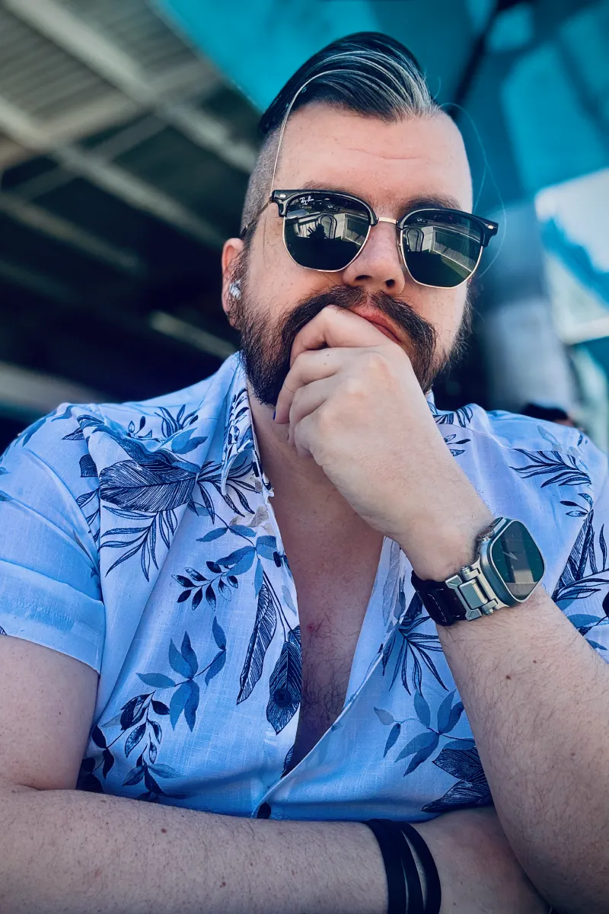

Hi. I'm
Jono
Hayward
(he/him)
I'm a queer nerd living in Naarm. I'm also a:
- cat dad
- trekkie
- beard appreciator
- UX/UI designer
- a11y advocate
- front-end web developer
I'm passionate about:
- LGBTIQA+ rights
- mental health
- good whiskey
- tech and gadgets
- video games
- a good boogie
Find me on
Bluesky,
Github
or
Letterboxd.
(Or
LinkedIn
if you really have to).
